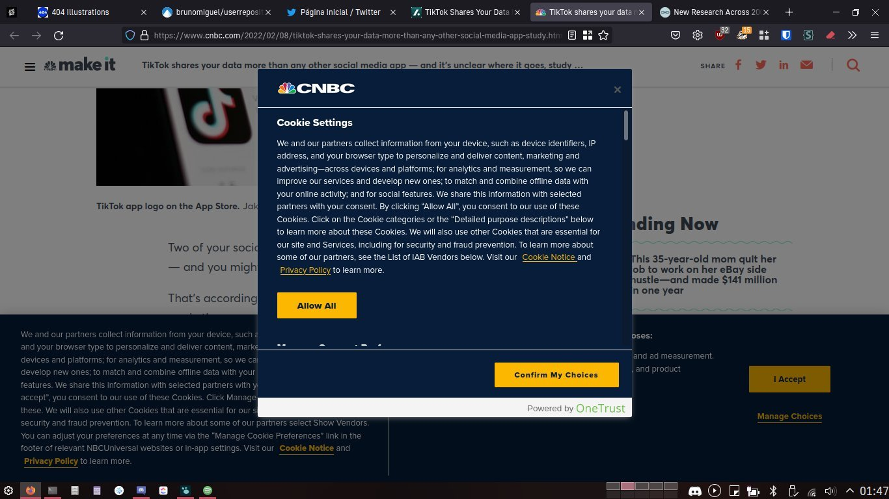
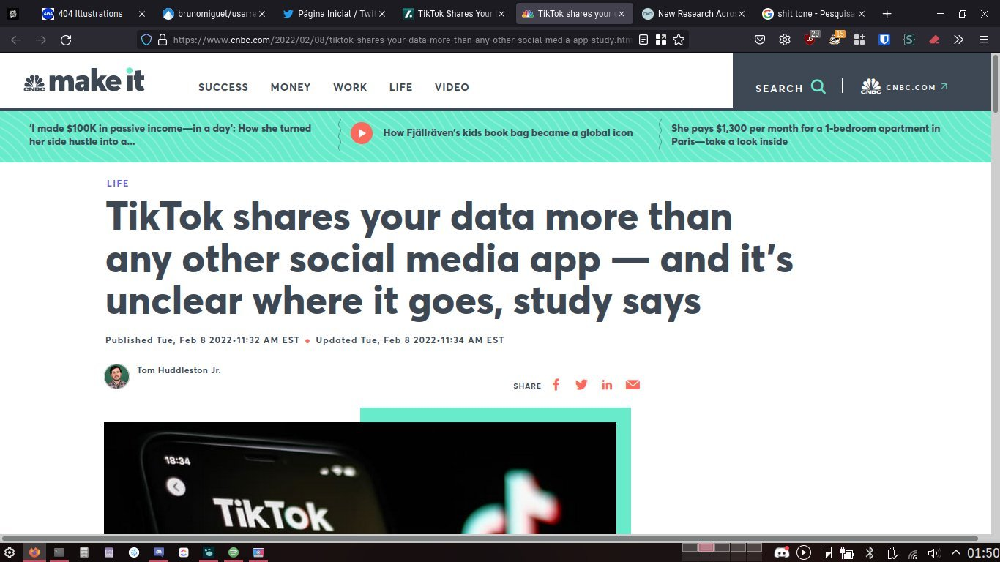

Que raio se passa com a Web? A quantidade de tracking a que um utilizador se sujeita é para lá de surreal! Há pouco, quando entrei no site da CNBC para ler uma notícia, e ainda antes de fazer a minha escolha em relação aos cookies, já tinha paletes deles bloqueados pelo uBlock Origin e pelo Privacy Badger. Assim que fiz a minha escolha, a página carregou e os números mantiveram-se praticamente iguais.
Porque raio perguntam pelos cookies se, no final, fica tudo praticamente na mesma? É verdade que não fui confirmar se o que escolhi para ficar desativo ficou realmente bloqueado. E para quê?! O número de coisas a tentar fazer tracking da minha navegação continuava alto como o caraças.
As imagens abaixo mostram o antes e o depois da escolha em relação aos cookies.
Antes

Depois

A CNBC está longe de ser caso único. O Twitter, por exemplo, está constantemente a tentar injetar coisas. Se deixar o browser aberto um par de horas, tenho mais de mil elementos bloqueados pelo adblocker. Sim, leste bem, mais de mil! Isto é fácil de confirmar: abre o site da rede social (já com o adblocker ativo e login feito), não faças mais nada e vê o número de elementos bloqueados a aumentar. True story.
Tenho saudades de quando navegar na web não significava ter centenas e centenas de balões trackers a olhar para nós. Isto é arrepiante, para não dizer mais. Mesmo com adblockers, continuam a fazer tracking por Canvas, WebGL e sabe-se lá que outros métodos. De certeza que deve haver uma forma mais ética de fazer isto.
A primeira imagem deste post é da autoria de Arthur Mazi e foi publicada no Unsplash. A licença está disponível no site. As restantes imagens são screenshots da minha autoria e estão disponíveis sob a licença Creative Commons (CC-BY-SA-4.0)